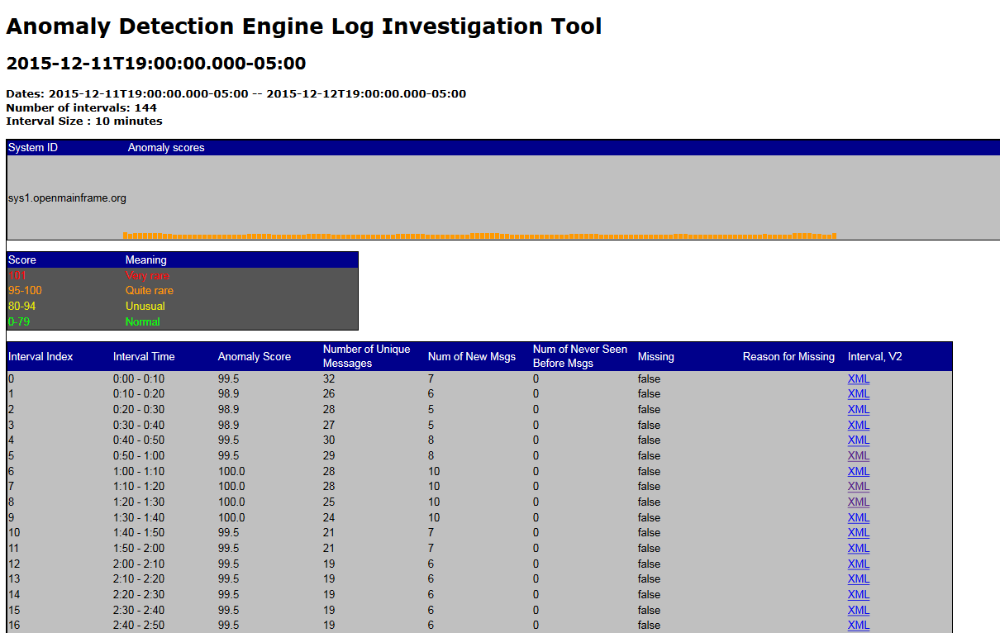
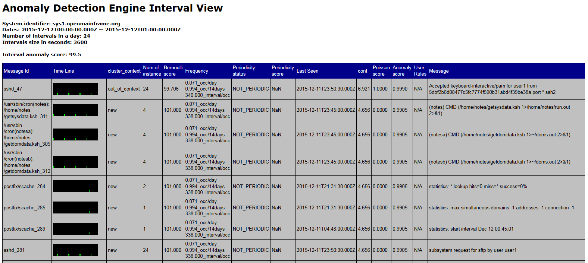

Anomaly detection Engine for Linux Logs (ADE)
Where in the ADE output to look for answers to critical questions
Use the index.xml files for the Linux systems analyzed to answer the following questions:
- Which Linux system is the most likely culprit?
- When is the first evidence of the problem?
- Are any new messages being seen?
- Are there any intervals without messages?
- What messages are unusual?
- How often did the unusual message get issued?
- Are messages issued in context within an expected pattern?
- When did the message ID first appear?
- Did the message appear when expected?
- Did the message occur at an expected predictable time (for example, every 81 seconds)?
Contents of index.xml displayed using default xslt
How the values contained in index.xml are calculated and the terminology used is described in How ADE detects unusual behavior of Linux systemsHere is an example of the results produced when using the default xslt file to display the xml files generated by ADE in a web browser. This example was built with a short training period than recommended and therefore contains significantly more New and Never Before Seen message ids resulting in higher anomaly scores than normal.
Here is the information displayed when using the default xslt file to process the index.xml files generated by ADE in a web browser:
| header information name | description |
| Dates: | Time period contained within the index.xml file |
| Number of intervals: | Number of intervals contained within the index.xml file; default flowlayout.xml will generate 144 intervals |
| Interval Size | Size of the analysis snapshot; how frequently the analysis is hardened to the index.xml file |
| System ID | Name of system |
| Anomaly scores | Each rectangle in a bar graph represents an analysis snapshot, which is a point-in-time record of the anomaly score for an analysis interval. The rectangle color indicates the anomaly score, and its height is an approximate illustration of the number of unique messages issued during the analysis interval. Taller rectangles represent analysis intervals in which a larger number of unique messages were issued.
|
| Score key | Values of the anomaly score used to color each rectangle in the bar graph. |
| information for each interval | description |
| Interval Time | Time slice (interval) |
| Anomaly Score | Anomaly score is the estimate of how unusual this interval is compared to other intervals observed during training |
| Number of Unique Messages | Number of unique messages within this interval |
| Num of New Msgs | Number of messages within this interval that were not included in the model created during training. |
| Num of Never Seen Before Msgs | Number of messages within this interval that have not been observed by analyze |
| Missing | True / False is data missing for this interval |
| Reason for Missing | ADE best guess as to why information is missing for the interval |
| Interval, V2 | hyper link to details about the interval which explains the anomaly score and shows the new message and messages which have never seen before |
Contents of interval_nnn.xml displayed using default xslt
ADE generates an xml file for each interval in the index.xml file. The current defaults will create 144 files with nnn ranging from 0 to 144. The interval_6.xml covers the time period from 00:00 to 01:00. The relationship between analysis interval and analysis snapshot is described in How ADE detects unusual behavior of Linux systemsHere is an example of the results produced when using the default xslt file to display the xml files generated by ADE in a web browser. This example was built with a short training period than recommended and therefore contains significantly more New and Never Before Seen message ids resulting in higher anomaly scores than normal.
Here is the information displayed when using the default xslt file to process the interval_nnn.xml files generated by ADE in a web browser:
| header information name | description |
| Dates: | Time period contained within the index.xml file |
| Number of intervals in a day | Number of intervals contained within a period(day); default flowlayout.xml will generate 24 intervals |
| Intervals size in seconds | Size of the analysis interval; how many seconds of analysis is included in each interval_nnn.xml file |
| System identifier | Name of system |
| Interval anomaly score | Anomaly score for the interval. |
| information for each message | description |
| Message Id | Provides the message identifier.
|
| Time Line | Provides
an illustration of when this message was issued within the analysis
interval. Each line represents a time period during the analysis
interval in which the message was issued at least once. The length
of the time period varies by the type of monitored system.
|
| cluster_context | Indicates whether or not this message is part of a cluster, which is an expected pattern or group of messages associated with a routine system event (for example, starting a subsystem or workload). ADE identifies and recognizes these patterns or groups, and the specific messages that constitute a specific cluster. When analyzing data from a monitored client, the server determines whether a specific message is expected to be issued within a specific cluster. A message that is issued out of context (without the other messages in the same cluster) might indicate a problem. Values
for Clustering Status are:
|
| (cluster id) | Provides the identifier of the cluster to which this message belongs. When the message is not part of a recognized cluster, the cluster ID is -1. |
| Num of instance | Specifies the number of times that this message was issued within the analysis interval. |
| Bernoulli score | Indicates how often this message was issued
within the collection of analysis intervals used to build the model. Values
range from 1 to 101:
|
| Frequency | Indicates the average number of analysis intervals in which the message is expected to be issued each day, according to analysis of the message data that ADE uses for training. |
| Periodicity status | Indicates whether or not this
message has a tendency to recur at specific times, and whether the
message recurred as expected within the analysis interval. Values for Periodicity Status
are:
|
| Periodicity score | Indicates how the periodicity status of this message might have contributed to the message anomaly score for the analysis interval. Higher scores generally indicate greater contribution to the message anomaly score. |
| Last Seen | Indicates the UTC date and time when this message was last issued on the monitored system, before the start of the current analysis interval. The time is displayed in 24-hour clock format. |
| Interval contribution | Indicates the relative contribution of this message to the anomaly score for the analysis interval. This interval score is a function of the following analysis results reported in the Messages table: Rarity Score, Clustering Status, Appearance Count, and Periodicity Status. Higher scores indicate greater contribution to the interval anomaly score. |
| Poisson score | Indicates how closely the message ID distribution in current data matches the Poisson distribution of that message ID in data during the training period for the system model. This value is provided only for message IDs that are not part of a cluster. The higher the poisson value, the greater the difference from expected behavior. |
| Anomaly score | Indicates the difference in expected behavior for this specific message ID within the analysis interval. The message anomaly score is a combination of the interval contribution score for this message and the rule, if any, that is in effect for this message. Higher scores indicate greater anomaly so messages with high anomaly scores are more likely to indicate a problem. The message anomaly score ranges from 0 through 1.0. |
| User Rules | Currently no user rules are provided with the default version of ADE |
| Message | Provides the full message text for the first occurrence of this message within the analysis interval. |